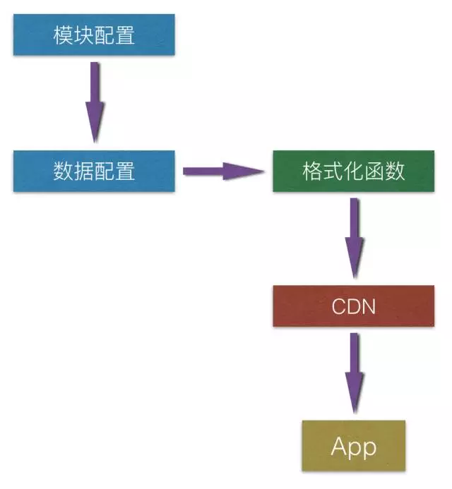

不要写死！天猫App的动态化配置中心实践
2016-03-15 高嘉峻 移动开发前线
版权声明本文为天猫无线技术专家、苹果核博主高嘉峻的投稿，未经授权禁止转载
不要写死，一个永恒的话题。动态化，也是一个涵盖了界面，功能，数据，配置诸多方面的一个宽泛话题。
在之前的一篇《解耦神器 —— 统跳协议和Rewrite引擎》（http://pingguohe.net/2015/11/24/Navigator-and-Rewrite.html）中提到了我们的配置中心。这篇文章就跟大家聊一聊手机天猫在配置动态化上的心路历程。
动态化就像野心一样会膨胀
最初移动App就是一个老老实实的App，一切都硬编码在客户端，只有业务数据是从API而来。
渐渐的就会发现，这里的Tab文案需要动态调整，那里的文本颜色需要个性定制。于是我们就在数据接口里加上一些信息来控制客户端逻辑。
当动态调整发挥作用，我们就发现这玩意儿简直太棒了，客户端逻辑居然也不需要版本依赖了！于是更多的逻辑开始未雨绸缪，开始在各自数据接口里预先埋下控制信息。
那些没有与API数据交互逻辑的静态功能就很不爽，天生的纯客户端逻辑，难道就活该不能动态化？于是开始考虑专门为动态化去设计一个API，专门传输控制信息。
后来还在后端还做了一个可视化的编辑界面，管理这些专门的控制信息，虽然简陋了一点，也比修改那些混在数据API里的信息要方便的多。
当专门用来传输控制信息的API和管理界面投入使用，渐渐的那些原本混在数据API里的控制信息也加了进来 —— 一个叫做配置的功能就这么诞生了。
天猫在配置这件事上投入了很多，成长至今，我们的配置中心也经历了漫长的成长过程，现在配置中心是一个支撑多款应用多个平台超过150个业务模块的系统。在这个配置中心里，有大到超过100条跳转规则的Rewrite引擎，小到仅仅配置了一个状态位的缓存开关；强业务相关的头图链接，强技术性的安全模式级别；最前端的App主题风格，最后端的日志打印策略；等等。
最简陋的配置文件
手机天猫第一个可以被称为配置中心的系统并非一个独立运行的应用，而是寄生在一个被称为TMS的类似CMS的前端平台上。最初的配置是每个业务在这个TMS上创建一张页面，以JSON方式输出到CDN，客户端代码按需下载这份JSON文件，从而实现动态化。逐渐我们发现，类似的需求越来越多，多个业务都在以这样的方式做动态化。
许多人在重复做同一件事，那么这件事就一定值得抽象。基于这样的逻辑，我们抽象了一个可以支撑多个业务的“配置中心”，同时把功能从TMS迁移到了另一个更轻量的前端平台——TWP上。在这个平台上，所有模块的配置都被描述为一张二维表，每一个模块可以在模版中订制列，而每一行就是该模块下的一条配置信息。每一次配置信息发生变更，这张二维表的数据会被提交到模版中的每个模块订制的一个JS函数，这个JS会针对二维表提交来的数据做校验和简单的格式化。

这个配置中心通过互相配合的两张页面模版最终生成一份被存储在CDN的配置文件。
- 一张页面做“模块配置”，用来管理接入配置中心的模块信息。包括：模块名称，列配置。
- 另一张页面做“数据配置”，通过读取“模块配置”的信息生成一个支持多sheet的二位表簇，同时还持有每一张二维表，也就是每一个模块，提交后的一段格式化JS函数。

每一次在“数据配置”页面填写数据并保存后，二维表簇的全部数据会被提交到格式化函数中，所有模块的JS函数会各自执行，并把结果拼装成一段完整的JSON，输出到CDN上。
在这个简陋的配置中心里，我们最多支持了50-60个模块的配置数据，数据量也超过了50K。由于配置数据是静态的，而且无法增量更新，客户端的流量问题非常严重。我们不得不再通过一个简单的Web应用，通过读取配置数据中的一个版本号（上图，也是人肉配置的，需要每个修改配置的人修改这个版本号加1）比对客户端上行的本地版本号，来判断是否有配置变更，从而决定是否读取这份完整的配置文件并下发到客户端。
横向扩展的配置中心
需求在膨胀
- 接入的模块越来越多，配置文件尺寸爆炸，客户端难以承受
- 线上版本增加，出现需要分平台分版本投放的情况
- 业务复杂性上升，二维表无法满足业务需求
新的业务需求推动配置中心的一次大重构，开始重新梳理配置信息的数据结构，并建设独立应用。
新配置中心
配置中心的数据结构必须兼顾统一性和个性化。统一的数据结构是抽象管理逻辑的基础，针对统一的数据结构可以设计出通用的管理界面，存储逻辑；而具有一定的个性化能力才能针对不同的场景更好的满足业务需求。
模型
基于这样的考虑，我们设计了Key-List-Object的三层数据结构。也就是说，整体上配置数据是一个Map，Map中的每一项都是一个List，而List中的项则不规定结构，可以自由发挥。Key-List-Object结构对应到业务上：
- Key - 表示模块名
- List - 表示模块数据
- Object - 表示模块中的一条配置项
配置项，也就是Object是整个数据模型中的原子。
此外，为了支持跨平台和版本的需求，还设计了应用-平台-版本-模块的元信息模型。
- 应用 - 这个系统可以支撑多款应用
- 平台 - 如：iPhone，Android Phone，iPad，Android Pad
- 版本 - 就是App的软件版本
- 模块 - 对应到数据结构的Key上
元信息模型和数据模型结合起来组成了完整的配置中心数据模型。数据项直接关联应用，模块和版本号三个元信息，版本号关联平台，模块关联应用。在这样的关联下，任意一个请求到达后：
- 提取请求元信息：应用，平台，版本号
- 根据提取的应用找到关联的模块列表
- 根据平台，版本，模块获取全部相关配置项
- 把全部构建成Key-List-Object的结构返回

强大的横向能力
在这样的技术方案下，这个新配置中心可以满足几乎全部横向需求，支撑多个应用，多平台，多版本同时管理。
修改某一个配置项并在多个版本同时生效，这样的操作非常常见，而在新技术方案下，给每一个版本的App都分配了独立的配置项数据。为了解决这个问题，我们给所有有关的配置项设计了一个独立的关系，当对某一个版本中的某一个配置项进行查询，同时可以查询到与之关联的其他版本中的项。修改某一个配置项也可以同步到同一个关系下的其他关联项。通过关系解决了对配置信息的关联处理。

全个性化的配置项
以上的模型满足了统一性，而个性化则在配置项上体现。在Key-List-Object结构中配置项没有硬性的格式要求，所以每一个项都可以有其个性结构，只需要满足JSON Schema的要求即可。
这样的设计也可以保证对List没有需求的场景，可以在首个配置项中有最高程度的设计自由度，定义适合业务的结构。
增量更新
之前说到新配置中心还要解决配置数据尺寸膨胀的问题。而随着业务增长，配置中心所支撑的业务模块已经超过了150个。在这样的体量下，一份完整的配置文件已经接近200KB。显然，每次都加载这样的一个文件是不现实的，因此我们开发了针对模块级别的增量更新功能。
任意一个模块发生数据更新后，将向系统提交一次版本变更请求，整个配置版本号加1。配置中心记录了每一次版本变更的模块信息。当数据请求到达配置中心后，系统将比对当前最新版本和请求上行的App本地版本，并计算出版本差之间发生变更的模块数据，构造一次增量数据返回。
在全部模块中，最大的一个模块数据不超过20KB，频繁更新的模块数量不多于10个，增量功能节约客户端数据流量超过90%。
纵向延伸的信息通道
至此一个功能完善的配置中心初具规模，然而随着配置中心接入的业务的增长，一个新的课题摆在我们面前。配置中心已经托管了几乎整个App的配置信息，系统的横向扩展只能积累量变，要进一步刺激业务能力升级就需要配置中心纵向扩展，在静态配置之外的领域具备更强的功能。
纵向能力扩展的思路也有不同。发展配置中心系统本身，针对需求扩展外延是传统思路。然而我们认为这样的做法不能最大限度的发挥配置中心所具备的的能力，资源产出比太低。如果可以调动既有的其他系统的，推动既有系统的无线化，发挥配置中心的通道能力，就可以调动前无线时代我们积累的大量成熟系统能力，让这些能力迅速在无线平台上发挥作用。这种做法不仅充分扩展了配置中心的纵向能力，又推动了既有系统的无线化升级转型，事半功倍。

对配置中心的纵向改造，我们从三个方面入手。
全开放的服务接口
依据所承担的功能，把配置中心拆分成网关、核心服务和界面系统三个部分，并对其进行服务化改造。每一部分都具备独立提供服务的能力，而他们之间的配合也通过服务化的接口来实现。
如此一来，每一个部分所具备的能力都都可以提供给配置中心系统以外的其他系统，而且拆分后的系统，每一部分的发布频率，系统要求，应用特点各有不同，可以针对性更强的进行系统优化。
提升数据通道稳定性
旧的配置中心设计中，网关直接返回核心系统计算出的配置数据，只是通过内存缓存来提升访问效率和稳定性。而新的设计下配置中心将为更多业务提供数据通道服务，必须选择更安全可靠的通道方案。
我们决定把静态配置数据按照业务切分，以横向属性组合为标示，投放到CDN上。通过网关下发CDN链接，App端SDK拿到链接后自行下载数据。从而降低核心模块的压力，提升稳定性。
高可定制的操作界面
此前，配置中心的界面趋于同质化，诚实的还原了Key-List-Object的数据结构，而配置项的编辑界面则是一个标准的JSON Editor。为了提升可用性，我们独立设计界面系统。
在这个界面系统中，业务方可以使用标准的JSON Schema来定义一张操作界面，也可以通过撰写HTML模版实现个性化更强的界面。界面的表单数据将被提交到一个负责格式化和校验的JavaScript方法中。在这个方法中表单数据被处理成系统所需要的配置数据，投放给核心服务。
不要写死，永恒的话题
不要写死，一个永恒的话题，这个话题会一直持续下去。而动态性这件事，是移动设备App当下最热门的话题。在PC时代，我们的系统经历了C/S到B/S的转换，终于实现了最大程度的动态化。而在无线时代，移动设备有他独特的属性，B/S模式无法满足无线时代的业务需求，至少当下是这样。那么Native动态化这条路，就还需要我们坚定的走下去，这条路的尽头可能是另一个B/S模式，也可能我们找到了完美的Dynamic Wireless C/S模式。
各位朋友好，『移动开发前线』第一波福利活动：关注送书活动已经顺利结束，获奖名单已经出来，现在向大家公布！~
本次活动由人民邮电出版社赞助，送出10本最新最火的移动开发领域好书。活动参与者共303名，从中随机抽出10名，他们的名单和选择的书籍如下：
恭喜你们！我们已经联系出版社，稍后出版社会陆续将书送出。
本周四晚8点移动前线群分享激情继续！加群可参与提问交流。
分享话题：天猫无线A/B测试实践
分享嘉宾：高嘉峻（gaosboy）
加群方法：关注移动开发前线公众号，点击『菜单加群』学习，按提示操作。
公众号ID：bornmobile
移动开发前线
最前沿与第一线移动技术
移动前线学习分享群
扫描二维码关注移动开发前线